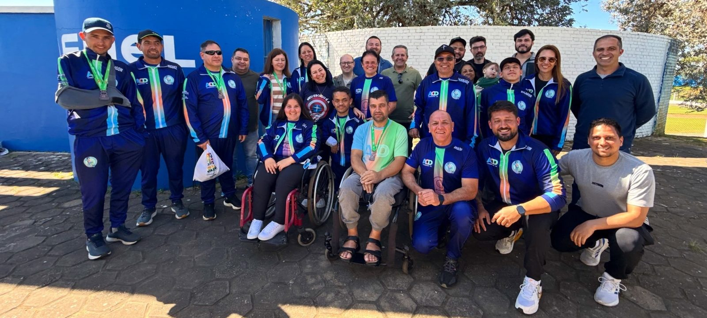
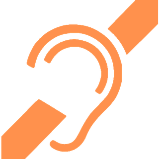
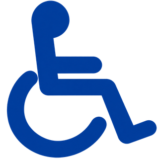
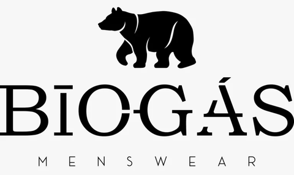
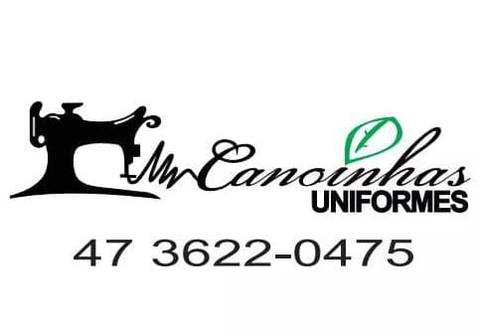
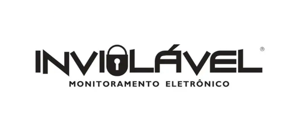
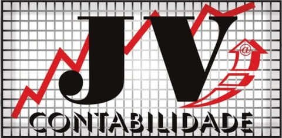
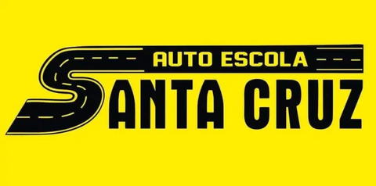

ACD É
DIVERSIDADE,
É INCLUSÃO!
Associação Canoinhense de Deficientes. Atuamos em Canoinhas, Três Barras, Bela Vista do Toldo e Major Vieira, no Planalto Norte de Santa Catarina.

Conheça os tipos de deficiência
Entender é o primeiro passo para incluir. Veja o que cada deficiência significa e como agir com empatia.

Auditiva
Perda auditiva parcial ou total, o direito à Libras e formas de facilitar a comunicação.
Saiba mais
Física
Dificuldades de marcha, sustentação e movimentação, categorias legais e equipamentos de apoio.
Saiba mais
Visual
Cegueira e baixa visão: direitos, acessibilidade e como orientar e auxiliar com respeito.
Saiba maisNossos serviços
Ações para garantir direitos, fortalecer vínculos e abrir caminhos para o trabalho.
Serviço de convivência e fortalecimento de vínculos
Autonomia, protagonismo social, arte, cultura, esporte e lazer para novos projetos de vida.
Ver detalhes 02Prevenção, inclusão e mediação ao mercado formal de trabalho
Encaminhamento às empresas e orientação para fortalecer habilidades e potencialidades.
Ver detalhes 03Defesa e garantia de direitos
Cidadania ativa, formação de lideranças e encaminhamento para a rede de atendimento.
Ver detalhesApoie a ACD
Qualquer valor faz a diferença na vida de quem atendemos.
Empresas Amigas da ACD
Obrigado a quem acredita na inclusão e caminha junto com a gente.







